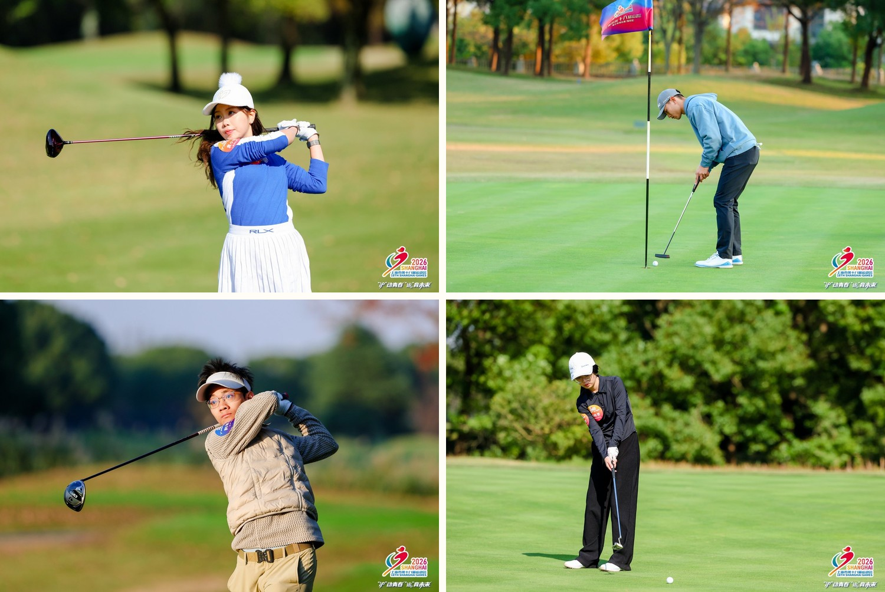
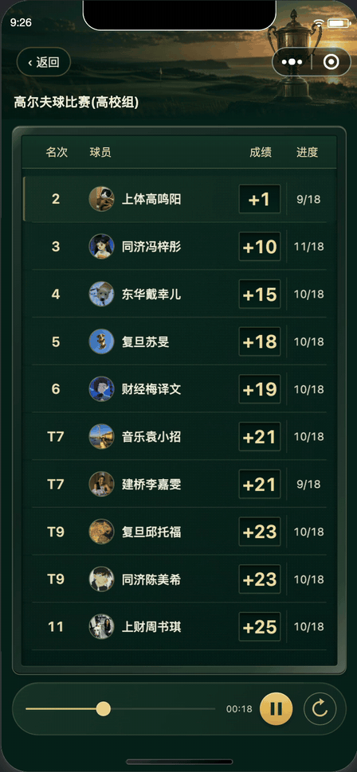

2026.11.20 上海协和高尔夫俱乐部
高尔夫小助理助力上海市第十八届运动会
高尔夫球比赛（高校组）

上海协和高尔夫俱乐部 · 孟宪青 摄 · 赛事相册
沪动青春，运育未来。 11月20日，上海市第十八届运动会高尔夫球比赛（高校组）在上海协和高尔夫俱乐部举行。来自10所高校的53名学生运动员走上球场，在18洞中角逐男子个人、女子个人和混合团体三个项目。
赛场集锦

挥杆与推杆 · 孟宪青 摄 · 赛事相册
比赛在打，榜单也在动
高尔夫小助理为本场赛事提供在线记分与实时播报支持。比赛当天，球童逐洞录入，裁判现场核对。各组的成绩汇入同一赛事页面，原创动态榜单随赛况更新。
女子组角逐中，高鸣阳在第1洞抓鸟，名次从第二升至第一。
榜单上，抓鸟高光随即亮起，排名也跟着变动。球员打完一洞，就能看看另一组的队友打到哪里。场外的老师、同学和校友，也能从分组表找到本校球员，跟上赛场的起伏。

个人榜赛中回放 · 小程序原生画面
学校之间的较量也看得见。混合团体赛以每校成绩最好的两名男子球员和两名女子球员的总杆之和排名。逐洞成绩更新时，团体榜会自动更新计入成绩的球员、学校排名和杆数差距。谁的成绩计入校队、离前一名还差几杆，打开榜单就能看到。

学校团体榜赛况复原 · 根据本场逐洞记录，在小程序原生界面重放

新华网｜胡洁菲 · 上观新闻｜文汇报 袁婧 · 《劳动报》
从市运会赛场，到校园练习赛
正式比赛用得上的记分和组织工具，也能服务同学们平时的练习。围绕校园高尔夫，高尔夫小助理与上海财经大学师生共创了练习赛模块，让同学们组织球局、记录成绩和交流切磋更方便。
祝贺取得佳绩的球员和校队！复旦大学、同济大学和上海财经大学分获混合团体赛前三名，也向每一位为学校出战的同学致意。

赛事合影 · 孟宪青 摄 · 赛事相册
高尔夫小助理
让一起打球更简单、更尽兴。
线上榜单用于跟进比赛进程，正式成绩以组委会公布为准。